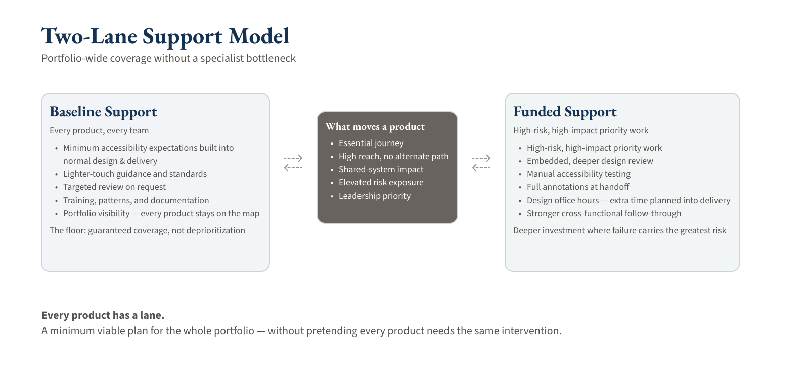

Walmart Associate Experience · 2025–2026
Associate Experience Portfolio Strategy
I turned a fragmented, roughly 80-touchpoint associate-experience portfolio into a visible decision system, helping teams prioritize accessibility risk while giving leadership a scalable model for where deeper support and investment would create the most value.
From Fragmented Requests to a Portfolio Decision System
Walmart’s Associate Experience organization was being pulled into a larger, newly consolidated portfolio. The digital landscape included internal tools, public-facing experiences, required workflows, shared systems, and products that were newly arriving in the same organizational space.
Accessibility work existed, but it was fragmented. Some products had audits or active support. Others had not been assessed. Shared components and patterns could create risk across multiple experiences. And leadership did not have one clear view of the portfolio, the relative risk, or where deeper support would create the most value.
The visible problem was fragmented accessibility coverage across a large associate-experience portfolio.
The deeper business and product problem was that leadership needed a shared way to see risk, compare priorities, and decide where deeper support should go.
This was not just a compliance backlog. It was a portfolio strategy problem: how do you improve quality across a changing organization without turning accessibility into a central bottleneck?
Challenge
The challenge mattered because the portfolio was too large and uneven for a product-by-product response.
A reorganization expanded my accessibility scope from supporting 3 product teams and 16 designers to supporting a 70+ designer Associate Experience organization with 5 directors. Many products were newly combined into one portfolio, and some were entirely new to the teams now responsible for them.
The organization needed a way to make better decisions under uncertainty:
- Which experiences were essential, high-reach, public-facing, or high-risk?
- Which teams needed baseline expectations versus deeper support?
- Which shared systems or patterns could spread accessibility issues across multiple products?
- How should leadership priority, major initiatives, or immediate needs change the model?
- How could the accessibility team support the full portfolio without becoming the only path to quality?
There was also a common misconception to correct: if teams were using an accessible design system, the resulting product flows should be accessible.
That is not how digital product quality works in practice. Accessibility can break when designers combine components into real workflows, use icons without accessible labels, adapt patterns locally, or create flow-level interactions the central design system cannot fully predict. Accessible components are necessary, but they do not automatically create accessible products.
Approach
I reframed the work from “run a gap analysis” to “build a decision system for the portfolio.”
My manager suggested that a gap analysis might be useful. I translated that prompt into a broader strategy: create portfolio visibility, define a risk-based prioritization model, and design a support structure that could scale across the new Associate Experience organization.
I started with ecosystem mapping instead of isolated product reviews. I personally built a working inventory and ran a deliberately high-level assessment across roughly 80 touchpoints. The goal was not to perform a deep audit of every product. It was to make the landscape visible enough to support decisions.
The first pass captured basics like:
- what each touchpoint was
- who it served
- whether it was internal or public-facing
- approximate reach
- ownership
- known risk or support signals
- where deeper review might be justified
I paired the inventory with one-on-one interviews with each portfolio director about their potential post-reorg portfolios. Those conversations helped pressure-test reach, exposure, priority, and risk in ways a spreadsheet could not.
That combination mattered. The inventory made the portfolio visible. The director conversations surfaced context the inventory alone could not capture.
Making Risk Visible
The sharpest discovery came from a conversation, not a spreadsheet column.
During director interviews, one director surfaced a Workplace incident and claims touchpoint with elevated legal and user-risk exposure. Because users of that experience could already be in a claims process context, accessibility barriers carried a different level of risk than a typical internal workflow.
That touchpoint moved into funded support.
This is the part of the story that proves the method. I was not just collecting product names. I was creating a discovery process that could surface hidden risk, translate it into priority, and connect it to a support decision.
What I Designed and Led
I created the portfolio strategy and support model for the work.
The core output was not a one-off assessment. It was a repeatable way to see the portfolio, compare risk, explain decisions, and route support.
I personally designed and led:
- the roughly 80-touchpoint portfolio inventory
- the high-level assessment model
- director discovery conversations
- a two-layer risk-and-impact prioritization model
- baseline and funded support lanes
- priority movement criteria for executive priority, major initiatives, immediate needs, or elevated risk
- change-management language to help teams understand why one product received deeper support while another stayed in a lighter lane
The work translated a vague sense of “too much to fix” into a structured portfolio view.
Prioritization Model
I built the prioritization model in two layers.
The first layer protected work that could not be ignored: essential journeys, required workflows, high-reach experiences, public-facing surfaces, and areas where associates had little or no alternate path.
The second layer compared the remaining work using factors such as:
- reach
- reusable pattern potential
- shared-system impact
- complexity
- historical accessibility risk
- leadership priority
- major initiative timing
- immediate need
This kept prioritization from becoming a loudest-voice exercise. It also made executive judgment explicit instead of treating it as an invisible exception.
The point was not to remove judgment. The point was to make judgment visible, discussable, and easier to defend.

Diagram details: prioritization logic
The diagram shows a two-layer decision process for prioritizing accessibility support across a large portfolio.
- Layer one identifies work that needs elevated attention because it is essential, high-reach, public-facing, legally sensitive, or difficult for users to avoid.
- Layer two compares other work using factors such as reach, pattern reuse, shared-system impact, complexity, known accessibility risk, leadership priority, major initiative timing, and immediate need.
- Leadership calibration makes strategic exceptions visible instead of leaving them implicit.
- The output routes work into either baseline support or funded support.
Two-Lane Support Model
The strategy became a two-lane support model: baseline support for every team, and funded support for higher-risk or higher-impact work.
Baseline support was the floor. Every product stayed visible in the portfolio and carried minimum expectations, shared standards, training or pattern guidance, and a defined path into deeper support if risk or priority changed.
Funded support was for work where deeper accessibility involvement was justified: critical workflows, higher-risk experiences, public-facing surfaces, shared systems, major initiatives, or immediate needs.
Funded support could include:
- deeper design review
- manual testing
- annotation support
- office hours
- stronger cross-functional follow-through
- more explicit review paths before handoff
This model helped the organization avoid two bad options: pretending every product needed the same level of specialist involvement, or leaving lower-priority teams with no support at all.
Every product had a lane. The question was how much support it needed, based on shared criteria.

Diagram details: two-lane support model
The diagram shows how the portfolio strategy separated support into two lanes while keeping every product visible.
- Baseline support applies across the portfolio through minimum expectations, shared standards, training, pattern guidance, and a way to escalate if risk changes.
- Funded support applies to critical workflows, higher-risk experiences, public-facing surfaces, shared systems, major initiatives, or immediate needs.
- Funded work can receive deeper design review, manual testing, annotation support, office hours, cross-functional follow-through, and clearer review paths.
- The model prevents an all-or-nothing support pattern by giving every team a lane and a path to deeper help.
Design Quality beyond the Design System
One important strategy shift was helping stakeholders understand where accessibility risk actually lives.
The organization had invested in an accessible design system, which was important. But a design system cannot guarantee the accessibility of every product flow built from it.
A component can be accessible in isolation and still become part of an inaccessible workflow. A designer can use an icon without a clear accessible label. A pattern can be adapted in a way that changes keyboard behavior, screen reader meaning, focus order, or error recovery. A local sub-system can introduce interaction issues the central component library was never designed to predict.
That was the quality gap this strategy addressed.
The model helped move accessibility from “the design system should have solved this” to a more accurate product-quality view: accessible components, flow-level review, annotations, pattern governance, and team capability all have to work together.
Making Complexity Tangible
The work was as much about organizational alignment as it was about accessibility.
The portfolio was changing. Teams had different levels of maturity. Leadership priorities were moving. Some products were already known risks, while others were newly visible because of the reorganization.
I used the inventory, interviews, prioritization model, and lane language to make the system easier to reason about.
That meant turning ambiguity into concrete artifacts:
- a shared portfolio view
- risk and support criteria
- baseline and funded lane definitions
- movement criteria for changing priority
- language teams could use to explain why one product received deeper support while another stayed in baseline
The work created a capability, not just an artifact. Afterward, the organization had a repeatable way to see the portfolio, discuss risk, route support, and make tradeoffs with more discipline.
Accessibility as a Quality and Risk Lens
Accessibility was central to the work, but the larger story is experience quality at scale.
For critical associate workflows, accessibility barriers can affect trust, completion, support burden, legal exposure, and the reliability of day-to-day work. For shared systems, one pattern issue can travel across multiple products. For teams moving quickly, late-stage remediation can create rework that could have been avoided through earlier guidance.
I positioned accessibility as part of product and design quality, not as a downstream compliance task.
That framing mattered because it moved the conversation closer to roadmap, investment, support capacity, and operating-model decisions.
Outcomes
The strongest outcome was decision infrastructure.
What changed because I was involved:
- The portfolio became visible: roughly 80 touchpoints could be discussed as a system instead of as scattered requests.
- Leadership gained a defensible way to compare risk and decide where deeper support should go.
- Teams had baseline expectations instead of an all-or-nothing support model.
- Higher-risk work had a path into funded support.
- A Workplace incident and claims touchpoint with elevated legal and user-risk exposure moved into funded support after director discovery surfaced the risk.
- The strategy clarified why accessible components still require flow-level review, pattern governance, annotations, and product-specific support.
- Priority movement criteria made executive priorities, strategic initiatives, immediate needs, and elevated risk explicit instead of hidden exceptions.
- The logic created a reusable model for future support planning.
The business value was not a claimed revenue number or cost-savings figure. It was a more durable capability: the organization could see accessibility risk across the portfolio, support every team at a baseline level, and focus deeper support where it would create the most value.
Related Materials
- Interactive portfolio wireframes: Explore the touchpoint inventory and linked portfolio views. These public-safe wireframes reconstruct the portfolio method and distinguish historical work from proposed activation examples.